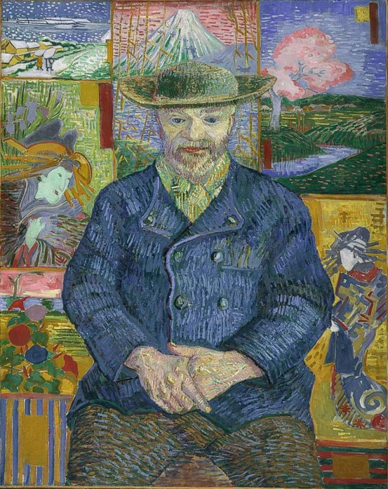
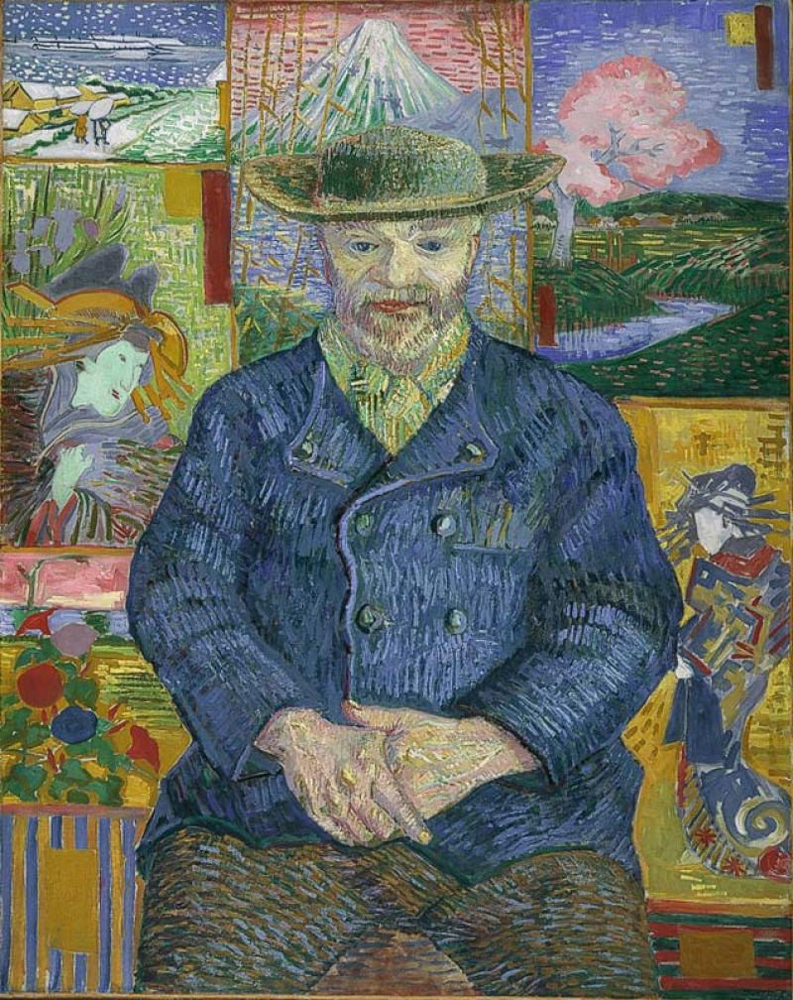

Vincent Willem van Gogh was born on 30 March 1853 in Nertherlands. He was the oldesst surviving child of Theodorus and Anna Cornelia. He had a really common name. Van Gogh was a serious and thoughtful child. He was homeschooled for a while and then sent to the village school later. His interest in art began at a young age. He was encouraged to draw as a child by his mother. From making expressive paintings in his early days to making intense painting in his later years, van Gogh had a lot of influence in the fiEld of Art and expression.
Ill from drink and suffering from smoker's cough, in February 1888 Van Gogh sought refuge in Arles. The time in Arles became one of Van Gogh's more prolific periods: he completed 200 paintings and more than 100 drawings and watercolours He had thoughts of finding an Art colony.He was enchanted by the local countryside and light; his works from this period are rich in yellow, ultramarine and mauve. They include harvests, wheat fields and general rural landmarks from the area.In March 1888 he painted landscapes using a gridded "perspective frame". He wanted a gallery to display his work and started a series of paintings that eventually included van Gogh's Chair, Bedroom in Arles, The Night Cafe, Cafe Terrace at Night, Starry Night Over the Rhone and Still life: Vase with Twelve Sunflowers. Van Gogh wrote that with The Night Café he tried "to express the idea that the café is a place where one can ruin oneself, go mad, or commit a crime"
Here are some of van Gogh's timeless paintings.
 
